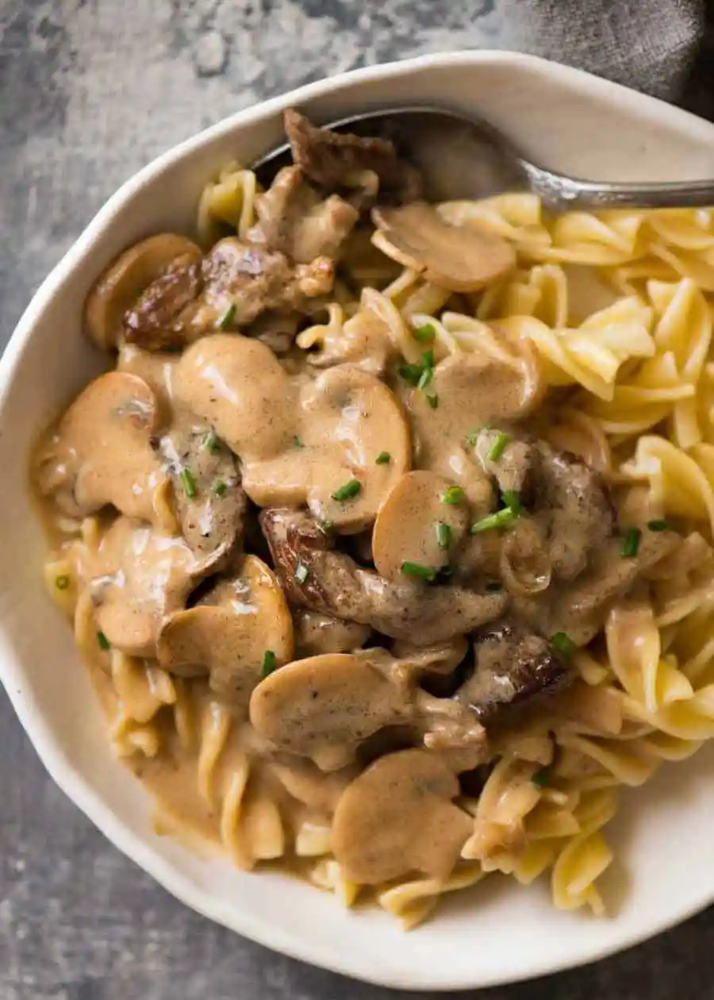

Chicken Alfredo
Ingredients:
Chicken Breast (strips), Fettucinne, Mushrooms, Heavy Cream, Parmesan, Salt and Pepper
Full Recipe:
1. Boil noodles on separate pot for 10 minutes for al dente texture.
2. Cook the chicken: Season the chicken, then pan-fry in oil and butter, for 6 minutes a side, or until an internal temperature reaches 165 degrees F. Transfer to a cutting board and let rest for a few minutes, then cut into 1/2-inch thick slices. Tent with foil, while you prepare the sauce.
3. Make the Alfredo sauce: Using the same pan you used to cook the chicken, the cream, butter, and seasonings are incorporated and simmered on medium-low heat until thickened, then the Parmesan is added in until melted and smooth.
4. Assemble: Drain the pasta, reserving some of the liquid to loosen the sauce (only if necessary.) Toss immediately with the Alfredo sauce. Divide the pasta among serving bowls and top with a few slices of cooked chicken. Garnish with parsley, more Parmesan, and black pepper if desired.
Charlie Chan Pasta
Ingredients:
Chicken Breast (cubes), Spaghetti, Mushrooms, Peanuts, Peanut Oil, ChickPea, Garlic and Onion, Char Siu Sauce, Oyster Sauce, Salt and Pepper
Full Recipe:
1. Rehydrate shiitake mushrooms in 1 cup of boiling water for 30 minutes. Remove mushrooms from water then thinly slice them then set it aside, reserve the liquid.
2. In a bowl combine all sauce ingredients together
3. In a wok add peanut oil then sauté onions and garlic.
4. Add the chicken and mushrooms then stir fry until chicken is cooked.
5. Add in the cooked pasta in the wok, stir fry for a minute.
6. Pour sauce add the peanuts, mix well then continue to stir fry for 3-4 minutes. If it’s to dry add a bit of the mushroom water.
7. Garnish with chopped spring onions then serve.
Spaghetti and Meatballs
Ingredients:
Ground Beef (balls), Spaghetti, Mushrooms, Tomatoes, Oil, Garlic and Onion, Parmesan, Salt and Pepper
Full Recipe:
1. Boil noodles on separate pot.
2. Turn on the pan. Add your oil and then saute your onion and garlic
3. In a large sauce pot over medium-high heat, warm 2 to 3 teaspoons oil until hot but not smoking. Working in batches if needed, add the meatballs and cook, turning once, until lightly browned but not yet cooked through, 2 to 3 minutes per side. Transfer to a plate. Add more oil between batches if needed. Do not clean the pan. While the meatballs brown, prepare the mushrooms.
4. In the same pot used for the meatballs, if dry, add 1 to 2 tablespoons oil. Warm over medium-high heat until hot but not smoking. Add the mushrooms and remaining onion and cook, stirring occasionally, until the vegetables are softened, 2 to 3 minutes. Add the meatballs, herbed marinara, and reserved pasta cooking water and bring to a simmer, scraping up any browned bits from the bottom of the pot. Cook, stirring occasionally, until the meatballs are cooked through, 4 to 6 minutes. Stir in the spaghetti, toss to coat, and cook until warmed through, 1 to 2 minutes. Remove from the heat and season to taste with salt and pepper. When the meatballs and sauce are almost done, prepare the salad.
Beef Stroganoff
Ingredients:
Boneless Ribeye or Beef Sirloin, Any Pasta or Egg Noodles of choice, Mushroom, Heavy Cream, Oil, Garlic and Onion, Parmesan, Salt and Pepper
Full Recipe:
1. Boil noodles on separate pot.
2. Use your fist (or rolling pin or mallet) to flatten the steaks to about 3/4cm / 1/3" thick. Slice into 5mm / 1/5" strips (cut long ones in half), discarding excess fat. Season with salt and pepper.
3.Heat 1 tbsp oil in a large skillet over high heat. Scatter half the beef in the skillet, QUICKLY spread it with tongs. Leave untouched for 30 seconds until browned. Turn beef quickly (as best you can!). Leave untouched for 30 seconds to brown. Immediately remove onto a plate. Don't worry about pink bits and that it will be raw inside.
4. Add remaining 1 tbsp oil and repeat with remaining beef.
5. Turn heat down to medium high. Add butter, melt. Then add onions, cook for 1 minute, then add mushrooms. Cook mushrooms until golden. Scrape bottom of fry pan to get all the golden bits off (this is flavour!).
6. Add flour, cook, stirring, for 1 minute. Add half the broth while stirring. Once incorporated, add remaining broth.
7. Stir, then add sour cream and mustard. Stir until incorporated (don't worry if it looks split, sour cream will "melt" as it heats).
8. Bring to simmer ,then reduce heat to medium low. Once it thickens to the consistency of pouring cream (3 - 5 minutes), adjust salt and pepper to taste.
Chicken Brocolli Pasta
Ingredients:
Chicken, Brocolli, Pasta, heavy cream
Full Recipe:
1. Season the chicken with lemon pepper seasoning and sear it in olive oil until golden. Set aside.
2. Deglaze the pot with white wine and let it reduce by half. Add the butter and the garlic and cook for 1 minute. Add the flour and cook for 1-2 minutes.
3. Add the chicken broth and half and half in splashes, stirring continuously. Add the hot sauce and seasonings. Bring to a boil, then reduce to a simmer while you boil the pasta to al dente. Add the broccoli to the boiling pasta water during the last 4 minutes. Drain.
4. Reduce heat to low and stir the Asiago and Parmesan cheese into the sauce. Remove from heat and stir in the lemon juice, Add the pasta, broccoli, and chicken and stir to combine.
Chicken Brocolli Mac & Cheese

Ingredients:
Chicken, Brocolli, Macaroni, Cheese
Full Recipe:
1. Preheat oven to 350°F.
2. Cook pasta al dente** in a large stockpot of generously-salted water, according to package instructions. About 2-3 minutes before the pasta reaches al dente, add in the broccoli florets and let them cook alongside the pasta for the remainder of the cooking time. Drain and set aside.
3. Meanwhile, as the pasta water is heating, melt butter in a (separate) medium saute pan over medium-high heat. Add garlic and saute for 1 minute or until fragrant, stirring occasionally. Whisk in the flour until combined and cook for an additional 1 minute, whisking occasionally. Slowly whisk in vegetable or chicken stock until the mixture is smooth. Then slowly whisk in the milk until it is combined. Continue cooking for 1-2 minutes, or until the mixture comes to a simmer. Then remove from heat, and stir in the cheddar, Parmesan, salt and pepper until the cheese sauce is smooth. Remove from heat.
4. Once the pasta and broccoli are cooked, pour the cheese sauce on top of the pasta, add in the chicken, and toss until everything is evenly combined.
5. At this point, you can either serve the pasta stovetop-style as-is. Or pour the pasta into a greased 9 x 13-inch baking dish, and sprinkle with extra cheddar cheese and Panko breadcrumbs. Bake for 15-20 minutes, or until the top becomes slightly crispy and the breadcrumbs are slightly golden. Remove and serve immediately.
Beef Stir Fry Noodles
Ingredients:
Beef, Egg Noodles, Brocolli, Bell Pepper, Carrots, Soy Sauce, Brown Sgugar
Full Recipe:
1. Into hot, boiled water add Better Than Bullion and brown sugar; stir to dissolve. Into the mixture, add soy sauce and set aside.
2. Dice carrots, broccoli and onion into two-inch pieces. Pre slice beef into very thin strips. Using a hot skillet with sesame oil, cook beef until it's golden brown, remove from the skillet and set aside.
3. Using the same skillet that was used to cook beef, sautee onions until golden brown with sesame oil. Remove from the skillet. In the same skillet, saute carrots until softened, add broccoli and cook for about three minutes. Press garlic into the same mixture.
4. Add cooked beef into the skillet with vegetables. Pour sauce over the ingredietns and let them simmer for about 2 minutes.
5. Add cooked noodles and toss everything together.
6. Into a large dish, combine noodles, vegetables and beef. Toss to bring everything together and serve while it's still hot.
Beef Broccoli Soup
Ingredients:
Beef, Udon, Brocolli, Soy Sauce, Brown Sgugar
Full Recipe:
1. In a pan add oil, and once hot, add onions, garlic and ginger. Stir fry till fragrant.
2. Add the beef slices next, and allow to cook.
3. Add the dark soy sauce, oyster sauce, tomato paste and black pepper and combine with the beef. Add water to form a liquid sauce. You can combine these ingredients in a bowl beforehand for efficiency.
4. Add the udon to the sauce. Gently separate the noodles in the sauce until it’s not a block. Allow the sauce to come to a boil.
5. Once it boils, add broccoli. Add the cornstarch and water slurry bit by bit, until sauce thickens.Serve!
Chicken Piccata
Ingredients:
Chicken Breast, Potato, Mushroom, Carrots, unsalted butter, 1/3 cup lemon juice, 1/2 cup chicken stock, 1/3 cup chopped parsley
Full Recipe:
1. Season chicken with salt and pepper. Dredge chicken in flour and shake off excess.
2. In a large skillet over medium high heat, melt 2 tablespoons of butter with 3 tablespoons olive oil. When butter and oil start to sizzle, add 2 pieces of chicken and cook for 3 minutes. When chicken is browned, flip and cook other side for 3 minutes. Remove and transfer to plate. Melt 2 more tablespoons butter and add another 2 tablespoons olive oil. When butter and oil start to sizzle, add the other 2 pieces of chicken and brown both sides in same manner. Remove pan from heat and add chicken to the plate.
3. Into the pan add the lemon juice, stock and capers. Return to stove and bring to boil, scraping up brown bits from the pan for extra flavor. Check for seasoning. Return all the chicken to the pan and simmer for 5 minutes. Remove chicken to platter. Add remaining 2 tablespoons butter to sauce and whisk vigorously. Pour sauce over chicken and garnish with parsley.
Creamy Garlic Chicken
Ingredients:
Chicken Breast, Potato, Mushroom, Heavy Cream, Garlic, All Purpose Flour, Oil, Chicken Stock
Full Recipe:
1. Simply slice the chicken breast in half lengthwise, season each piece and dredge in flour.
2. Heat up oil in a skillet. Cook chicken on both sides until nicely browned. Remove onto a plate.
3. Make the creamy mushroom sauce in the same pan by adding more oil, garlic and mushrooms and saute until soft and fragrant. , add the chicken back in.
4. Garnish with chopped parsley and serve. Since the chicken breast pieces are thin, they don't take much time to cook.
5. On the side, mash the potatoes, mix it with cream, butter, and salt.
Salisbury Steak
Ingredients:
Lean Ground Beef, Mushrooms, Potato, Bread Crumbs, Cornstarch, Onions, 2 cups Beef Broth
Full Recipe:
1. Combine ground beef, bread crumbs, chopped onion, egg, salt, and black pepper in a large bowl until evenly mixed. Shape beef mixture into 4 patties, about 3/4-inch thick.
2.Fry patties in a large skillet over medium heat until browned on both sides, about 10 minutes. Add beef broth, onion, and mushrooms; bring to a boil. Reduce heat to low, cover, and simmer until patties are no longer pink in the center, about 10 minutes more. Transfer patties to a platter and keep warm.
3. Bring onion mixture to a boil. Mix cornstarch and water in a small bowl; stir into onion mixture. Cook and stir until onion gravy is thickened, about 1 minute. Pour over patties to serve.
Beef Caldereta
Ingredients:
Beef, Potatoes, Carrots, Bell Pepper, Mushrooms, Tomato Sauce, Cheese, Butter, 2 cups beef broth, oregano, cream of mushroom
Full Recipe:
1. Rub salt and ground black pepper on the beef. Let it stay for 10 minutes.
2. Melt 1 tablespoon butter in a Dutch oven or cooking pot. Put the beef in and cook for 3 to 5 minutes or until the color turns light brown.
3. Remove the beef. Set Aside. Melt the remaining butter in the same cooking pot.
4. Once the butter melts, saute the mushrooms, onions, and garlic. Continue to cook until the mushrooms become soft. Add the beef. Cook for 2 minutes.
5. Add the tomato paste, parsley, oregano, and beef broth. Stir and let boil. Cover and simmer 60 min.
6. Add the cream of mushroom. Stir and cook for 2 to 3 minutes. Turn the heat off. Transfer to a serving plate.
Chicken Stir Fry
Ingredients:
Chicken, Potato, Brocolli, Bell Pepper, Carrots, Soy Sauce, Brown Sugar, Ginger
Full Recipe:
1. Heat 1 teaspoon of oil in a large frying pan over medium heat. Add the broccoli and mushrooms and cook for approximately 4 minutes or until vegetables are tender.
2. Add the ginger and garlic to the pan and cook for 30 seconds more.
3. Remove the vegetables from the pan; place them on a plate and cover. Wipe the pan clean with a paper towel and turn the heat to high. Add the remaining tablespoon of oil.
4. Season the chicken pieces with salt and pepper and add them to the pan in a single layer - you may need to do this step in batches. Cook for 3-4 minutes on each side until golden brown and cooked through.
5. Add the vegetables back to the pan and cook for 2 more minutes or until the vegetables are warmed through.
6. In a bowl whisk together the oyster sauce, chicken broth, sugar, sesame oil and soy sauce. In a small bowl mix the cornstarch with a tablespoon of cold water.
7. Pour the oyster sauce mixture over the chicken and vegetables; cook for 30 seconds. Add the cornstarch and bring to a boil; cook for 1 more minute or until sauce has just started to thicken.
Roasted Chicken
Ingredients:
Chicken, Potato, Brocolli, Bell Pepper, Carrots, Soy Sauce, Brown Sugar
Full Recipe:
1. Heat 2 Tablespoons of oil in the same skillet over medium high heat. Once the oil is shimmering, add the steak.
2.Allow the pieces to sear for just about a minute or two per side, then turn to brown on all sides. Be careful of overcooking!
3. Test for doneness with a meat thermometer (145°F + 3 minute rest, per USDA), or by simply taking a piece out of the skillet and cutting into it (and then sneaking a bite, yum!). Set the steak pieces to the plate with the vegetables.
4. Last, make the garlic butter sauce: First, lower the heat, then add the remaining oil, butter, and garlic to the skillet. Saute over low heat until the garlic is fragrant, about 3-4 minutes.
5. Add the steak and vegetables to the skillet, turning to fully coat the steak and vegetables in the butter and garlic. Sprinkle with parsley and season lightly with salt and pepper. Serve immediately!
Garlic Butter Steak Bites
Ingredients:
Sirloin Steak (Cubes), Potatoes Brocolli, Butter, Garlic
Full Recipe:
1. Heat 2 Tablespoons of oil in the same skillet over medium high heat. Once the oil is shimmering, add the steak.
2.Allow the pieces to sear for just about a minute or two per side, then turn to brown on all sides. Be careful of overcooking!
3. Test for doneness with a meat thermometer (145°F + 3 minute rest, per USDA), or by simply taking a piece out of the skillet and cutting into it (and then sneaking a bite, yum!). Set the steak pieces to the plate with the vegetables.
4. Last, make the garlic butter sauce: First, lower the heat, then add the remaining oil, butter, and garlic to the skillet. Saute over low heat until the garlic is fragrant, about 3-4 minutes.
5. Add the steak and vegetables to the skillet, turning to fully coat the steak and vegetables in the butter and garlic. Sprinkle with parsley and season lightly with salt and pepper. Serve immediately!
Beef Tenderloin
Ingredients:
Beef, Potato, Brocolli
Full Recipe:
1. Adjust rack to top position and preheat oven to 425 degrees. Wash and dry all produce. Dice potatoes into ½-inch pieces (no need to peel). If necessary, cut broccoli florets into 1-inch pieces.
2. Place potatoes in a large pot with enough salted water to cover by 2 inches. Bring to a boil and cook until very tender, 15-20 minutes. Reserve ½ cup potato cooking liquid, then drain. Return potatoes to pot and add sour cream, half the chives, and 1 tbsp butter. Mash, adding splashes of reserved cooking liquid as needed, until smooth and creamy; season with salt and pepper, as desired. Cover to keep warm.
3. While potatoes cook, toss broccoli on a baking sheet and drizzle with 2 tsp of olive oil, and salt and pepper, as desired. Roast, tossing halfway through, until browned and slightly crispy, 15-20 minutes.
4. Meanwhile, pat beef dry with paper towels; season all over with salt and pepper. Heat 1 tsp of vegetable oil in a large pan over medium-high heat. Add beef and cook until a crust begins to form, 4-7 minutes per side. Remove from heat; set beef aside to rest. Wipe out pan.
5. Add the vinegar and 1/4 cup water to same pan over medium-high heat. Dissolve beef base in liquid and bring to a simmer. Cook until thickened, 2-3 minutes. Remove from heat and stir in 1 tbsp butter. Season with salt and pepper, as desired.
6. Divide beef, broccoli, and potatoes between plates. Drizzle beef with sauce. Garnish potatoes with dried chives, if desired.